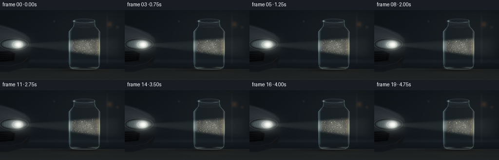
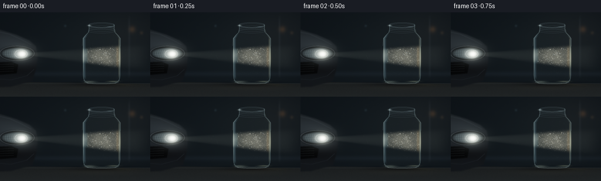

CODING AGENTS AS PIXEL WORLD MODELS
traex/GPT-6.1-Sol · phygen_048
点击播放 · 原生 RGB 像素
逐轮保存的候选
回放视频、检查图与代码变化。
每份候选均可单独播放。实际图片检查记录在下方工具轨迹中。
候选 01播放与检查图
点击播放 · 原生 RGB 像素


展开代码变化
--- 上一保存版本
+++ 本次保存版本
@@ -0,0 +1,239 @@
+"""Procedural RGB cinematography: headlight scattering through dusty air in glass.
+No external assets or rendering engines. Run to regenerate all output artifacts.
+"""
+from pathlib import Path
+import numpy as np
+from PIL import Image, ImageDraw
+from scipy.ndimage import gaussian_filter, map_coordinates
+from artifact_io import save
+
+ROOT = Path(__file__).resolve().parent
+S = 3
+W, H = 256*S, 144*S
+Y, X = np.mgrid[:H, :W].astype(np.float32)/S
+rng = np.random.default_rng(48021)
+
+def g(x,y,sx,sy=None):
+ if sy is None: sy=sx
+ return np.exp(-.5*((X-x)/sx)**2-.5*((Y-y)/sy)**2)
+
+def smooth(a,b,t):
+ q=np.clip((t-a)/(b-a),0,1)
+ return q*q*(3-2*q)
+
+def mask_poly(points, blur=0):
+ im=Image.new('L',(W,H)); d=ImageDraw.Draw(im)
+ d.polygon([(int(x*S),int(y*S)) for x,y in points], fill=255)
+ m=np.asarray(im,dtype=np.float32)/255
+ return gaussian_filter(m,blur*S) if blur else m
+
+def line_mask(points, width=.5, blur=.12):
+ im=Image.new('L',(W,H)); d=ImageDraw.Draw(im)
+ d.line([(int(x*S),int(y*S)) for x,y in points],fill=255,width=max(1,round(width*S)),joint='curve')
+ m=np.asarray(im,dtype=np.float32)/255
+ return gaussian_filter(m,blur*S) if blur else m
+
+def ellipse_line(cx,cy,rx,ry,width=.3,blur=.1,a0=0,a1=2*np.pi):
+ a=np.linspace(a0,a1,180)
+ return line_mask(list(zip(cx+rx*np.cos(a),cy+ry*np.sin(a))),width,blur)
+
+def add(im,field,color):
+ im += field[...,None]*np.array(color,dtype=np.float32)
+
+# Charcoal blue garage; shallow depth of field, background kept unobtrusive.
+bg=np.zeros((H,W,3),np.float32)
+bg[:]=[.019,.028,.037]
+add(bg,g(157,63,93,59),[.014,.019,.019])
+add(bg,g(213,37,50,35),[.014,.012,.010])
+for xx,yy,r,c in [(225,29,3.8,(.068,.038,.015)),(241,35,2.1,(.035,.023,.012)),(111,23,1.5,(.021,.032,.037))]:
+ add(bg,g(xx,yy,r),c)
+# Out-of-focus garage architecture.
+add(bg,np.exp(-((X-220)/1.8)**2)*smooth(0,20,Y)*(1-smooth(102,115,Y)),[.012,.014,.016])
+add(bg,np.exp(-((Y-105)/4)**2),[.010,.013,.017])
+# Slate bench in the near foreground, slightly angled receding back edge.
+surface=smooth(119.5,120.8,Y-.011*(X-150))
+stone=gaussian_filter(rng.normal(size=(H,W)),1.2)
+base_color=np.stack([.047+.012*(Y-120)/24,.053+.014*(Y-120)/24,.055+.015*(Y-120)/24],-1)
+bg=bg*(1-surface[...,None])+base_color*surface[...,None]
+bg+=stone[...,None]*surface[...,None]*.003
+add(bg,np.exp(-((Y-121.5)/.7)**2),[.014,.017,.019])
+# Partial front quarter of a real car in the background, extending off camera.
+car_shape=mask_poly([(-15,29),(1,30),(27,38),(50,48),(61,58),(64,75),(62,94),(55,117),(18,127),(-15,128)],1.0)
+car_color=np.zeros_like(bg)
+car_color[:]=[.029,.035,.041]
+add(car_color,g(8,53,43,19),[.047,.056,.061])
+add(car_color,g(30,82,29,24),[.007,.009,.013])
+car_color-=g(23,97,31,8)[...,None]*np.array([.015,.020,.024])
+bg=bg*(1-car_shape[...,None])+car_color*car_shape[...,None]
+add(bg,line_mask([(-8,32),(16,37),(38,47),(53,55)],.65,.55),[.044,.052,.057])
+add(bg,line_mask([(-10,113),(19,115),(46,108),(58,97)],.6,.4),[.029,.034,.040])
+# Bumper air intake and restrained horizontal grille bars.
+intake=mask_poly([(-3,85),(19,84),(31,89),(28,104),(-4,107)],.6)
+bg*=1-intake[...,None]*.70
+for yy in [88,92,96,100]:
+ add(bg,line_mask([(-3,yy+1),(23,yy)],.5,.25),[.046,.051,.055])
+# Headlamp housing, elliptical lens and reflector facets.
+lamp_x,lamp_y=36.,71.
+housing=np.exp(-(((X-29)/30)**2+((Y-70)/13)**2)**4)
+bg*=1-.81*housing[...,None]
+add(bg,ellipse_line(29,70,29.4,12.4,.9,.35),[.075,.083,.087])
+lens=np.exp(-(((X-29)/25.6)**2+((Y-70)/9.3)**2)**5)
+add(bg,lens,[.119,.145,.155])
+for i in range(12):
+ xx=6.5+i*3.6
+ facet=line_mask([(xx,64),(xx-1.3,70),(xx+.4,77)],.43,.24)*lens
+ add(bg,facet,[.08,.11,.12])
+for yy in [65.0,68.0,72.5,75.5]:
+ add(bg,line_mask([(4,yy),(16,yy-.8),(31,yy-.7),(51,yy+1)],.33,.24)*lens,[.07,.08,.075])
+add(bg,ellipse_line(36,71,10.7,7.1,.67,.24),[.23,.24,.22])
+add(bg,g(36,71,7.6,5.1),[.69,.72,.68])
+add(bg,g(38,71,3.6,2.9),[1.30,1.26,1.07])
+# Lamp halo, physically spreading before illuminating the enclosed dust.
+add(bg,g(37,71,17,12),[.066,.073,.067])
+
+# Glass jar profile. Screw-top mouth is open: its ellipse is not a liquid level.
+cx=173.
+ys=np.array([20,23,30,34,39,44,107,113,117,121,122],np.float32)
+rs=np.array([21,22,22,23,28,32.2,32.2,31.5,29.7,23.5,0],np.float32)
+radius=np.interp(Y,ys,rs).astype(np.float32)
+radius=np.maximum(radius,.01)
+q=(X-cx)/radius
+vertical=smooth(19,21,Y)*(1-smooth(121,123,Y))
+jar=smooth(1.026,.981,np.abs(q))*vertical
+inner=smooth(1.0,.90,np.abs(q))*smooth(29,36,Y)*(1-smooth(115,120,Y))
+# Subtle contact shadow and surface light pool.
+add(bg,g(cx,123,41,3.0),[-.026,-.028,-.026])
+add(bg,g(170,127,46,4.0),[.014,.012,.007])
+# Broad beam geometry at a constant direction: no arbitrary light motion.
+axis=71+.028*(X-38)
+beam_width=1.4+.083*np.maximum(X-38,0)
+beam=np.exp(-.5*((Y-axis)/beam_width)**6)*smooth(39,50,X)*(1-smooth(226,262,X))
+core=np.exp(-.5*((Y-axis)/(beam_width*.55+.7))**2)
+# Coherent dust density fields: softly evolving clouds, not solid smoke ribbons.
+noise=rng.normal(size=(H,W)).astype(np.float32)
+noise_low=gaussian_filter(noise,9*S)
+noise_low=(noise_low-noise_low.mean())/(noise_low.std()+1e-8)
+noise_fine=gaussian_filter(noise,2*S)
+noise_fine=(noise_fine-noise_fine.mean())/(noise_fine.std()+1e-8)
+
+# Fresnel reflection and thickness: quiet transparent body plus thin bright edges.
+glass_static=np.zeros_like(bg)
+edge=np.exp(-((np.abs(q)-.970)/.018)**2)*vertical
+add(glass_static,edge,[.112,.142,.143])
+left=np.exp(-((q+.909)/.050)**2)*smooth(35,44,Y)*(1-smooth(108,116,Y))
+add(glass_static,left,[.055,.083,.095])
+left_hair=np.exp(-((q+.955)/.012)**2)*smooth(32,43,Y)*(1-smooth(92,106,Y))
+add(glass_static,left_hair,[.138,.166,.167])
+right=np.exp(-((q-.921)/.028)**2)*smooth(37,49,Y)*(1-smooth(104,115,Y))
+add(glass_static,right,[.110,.115,.090])
+# Shoulder highlights, curved as they transition into the neck.
+add(glass_static,line_mask([(151,30),(150,34),(145,39),(141,44),(140,57)],.45,.25),[.115,.145,.152])
+add(glass_static,line_mask([(195,29),(197,35),(202,40),(205,45),(205,58)],.5,.24),[.096,.112,.106])
+# Rolled lip with elliptic front/back, paired glass thickness and three screw threads.
+for cy,rx,ry,amp in [(21.7,22.2,4.0,.20),(23.3,22.2,3.9,.12),(26.4,22.0,3.5,.075),(29.3,22.,3.5,.072),(32.0,22.5,3.5,.065)]:
+ add(glass_static,ellipse_line(cx,cy,rx,ry,.45,.18),[amp*.72,amp*.93,amp])
+ add(glass_static,ellipse_line(cx,cy,rx,ry,.45,.18,0,np.pi),[amp*.35,amp*.39,amp*.40])
+# Rim catches the source on its left; interior behind remains dark and empty.
+add(glass_static,g(152,22.4,1.8,.75),[.27,.31,.31])
+add(glass_static,g(187,24.5,3,.45),[.083,.11,.12])
+# Heavy rounded base, elliptical glass foot (not a flat water surface).
+for cy,rx,ry,amp in [(115.6,30.6,4.5,.09),(118.7,28.6,3.5,.14),(120.3,25.2,2.0,.08)]:
+ add(glass_static,ellipse_line(cx,cy,rx,ry,.52,.28,0,np.pi),[amp*.83,amp,amp])
+add(glass_static,g(153,118.7,6.2,1.25),[.09,.10,.084])
+add(glass_static,g(193,118,6.0,.85),[.10,.107,.078])
+
+N=1250
+px=rng.uniform(-27.3,27.3,N)
+py=rng.uniform(39,113,N)
+pz=rng.uniform(-1,1,N)
+phase=rng.uniform(0,2*np.pi,N)
+size=rng.uniform(.10,.35,N)
+size[rng.choice(N,30,replace=False)]=rng.uniform(.38,.65,30)
+bright=rng.lognormal(-.52,.62,N)
+# Outside dust is much sparser than the enclosed dusty air.
+O=160
+ox=rng.uniform(60,250,O); oy=rng.uniform(54,98,O); oph=rng.uniform(0,6.28,O)
+
+def splat(layer,x,y,sig,strength,color):
+ if strength<.002: return
+ rr=max(2,int(sig*S*3)+1)
+ ix=int(x*S); iy=int(y*S)
+ xa=max(0,ix-rr); xb=min(W,ix+rr+1); ya=max(0,iy-rr); yb=min(H,iy+rr+1)
+ if xa>=xb or ya>=yb:return
+ xx=(np.arange(xa,xb)/S-x)[None,:]; yy=(np.arange(ya,yb)/S-y)[:,None]
+ a=np.exp(-.5*(xx*xx+yy*yy)/sig**2)*strength
+ layer[ya:yb,xa:xb]+=a[...,None]*color
+
+frames=[]
+for f in range(20):
+ t=f/4
+ im=bg.copy()
+ # Dust clouds advect only a few pixels as quiet convection circulates the jar.
+ coords=np.array([(Y+.50*t+1.6*np.sin(X/21+t*.27))*S,
+ (X-1.1*t+1.7*np.sin(Y/13-t*.22))*S])
+ nl=map_coordinates(noise_low,coords,order=1,mode='reflect')
+ nf=map_coordinates(noise_fine,coords,order=1,mode='reflect')
+ density=np.clip(.74+.20*nl+.060*nf,.24,1.32)
+ # External beam is visible in faint haze; the dusty jar produces much stronger scattering.
+ external=beam*(.032+.018*core)*np.exp(-(X-40)/320)
+ add(im,external,[.79,.84,.76])
+ # A transparent cylindrical wall weakly refracts what is seen through it.
+ warp_x=X+np.clip(q,-1,1)**3*1.4*jar
+ warped=np.stack([map_coordinates(im[:,:,c], [Y*S,warp_x*S],order=1,mode='nearest') for c in range(3)],-1)
+ im=im*(1-jar[...,None])+warped*jar[...,None]
+ im*=1-jar[...,None]*.026
+ add(im,jar*(.015+.012*np.abs(q)**4),[.34,.48,.50])
+ cloud=beam*inner*density*(.145+.042*core)
+ # Subtle warm/cool hues from glass and the broad-spectrum headlight.
+ add(im,cloud,[1.04,.99,.80])
+ add(im,beam*inner*np.exp(-((q+.82)/.075)**2),[.023,.060,.075])
+ add(im,beam*inner*np.exp(-((q-.84)/.065)**2),[.092,.057,.014])
+ # Barely visible folds of particulate concentration along the light, never hard rays.
+ thread=np.exp(-((Y-axis-2.1*np.sin((X-139)/13+.30*t))/(1.1))**2)
+ add(im,thread*beam*inner*(.012+.006*np.sin(X/5+.2*t)),[1.,.95,.78])
+ dust=np.zeros_like(im)
+ dx=px+1.9*np.sin(phase+t*.53)+.30*t*pz
+ dy=py+2.8*np.cos(phase*.9+t*.45)-.22*t+1.0*np.sin(px*.13+t*.38)
+ for i in range(N):
+ x=cx+dx[i]; y=dy[i]
+ if not (40<y<114 and abs(x-cx)<29.8):continue
+ bw=1.4+.083*(x-38)
+ distance=(y-(71+.028*(x-38)))/bw
+ lit=np.exp(-.5*abs(distance)**6)
+ # Forward-scattering intensity, brightness changes naturally as particles drift.
+ amount=bright[i]*(.005+.44*lit)*(.66+.34*(pz[i]+1)/2)
+ col=np.array([1.0,.97,.83]) if pz[i]>-.4 else np.array([.79,.89,.97])
+ splat(dust,x,y,size[i],amount,col)
+ for i in range(O):
+ x=ox[i]+.46*t; y=oy[i]+.7*np.sin(oph[i]+t*.5)
+ bw=1.4+.083*(x-38)
+ lit=np.exp(-.5*abs((y-(71+.028*(x-38)))/bw)**6)
+ splat(dust,x,y,.15,.052*lit,np.array([.95,.98,.92]))
+ im+=dust
+ # Glass overlays particles correctly: highlights are on the surface in front of the air.
+ im+=glass_static
+ # Refractive illumination on the glass entry/exit walls, with restrained colored fringes.
+ strike=beam*edge
+ add(im,strike,[.29,.31,.23])
+ add(im,g(142,74,1.5,6.3),[.081,.100,.105])
+ add(im,g(204,77,1.0,7.4),[.12,.102,.060])
+ # Short scattered pool beyond the jar and small caustics on the slate.
+ add(im,g(212,123.8,18,1.8),[.013,.012,.007])
+ add(im,np.exp(-((Y-121.8-.06*(X-190))/.56)**2)*g(195,124,18,7),[.025,.024,.015])
+ # Optical bloom is only generated by luminous objects, preserving dark detail.
+ lum=im.max(axis=2)
+ hot=np.maximum(lum-.32,0)
+ add(im,gaussian_filter(hot,1.9*S),[.20,.205,.18])
+ add(im,gaussian_filter(hot,6.0*S),[.055,.059,.05])
+ # Film-like toe/exposure with highlight shoulder, no clipped neon outlines.
+ im=np.maximum(im,0)
+ im=1-np.exp(-im*1.66)
+ im=np.power(im,.87)
+ # Stable fine sensor grain, downsampled for clean subpixel particles and glass.
+ im+=rng.normal(0,.0015,(H,W,1)).astype(np.float32)
+ img=Image.fromarray(np.uint8(np.clip(im,0,1)*255),'RGB')
+ img=img.resize((256,144),Image.Resampling.LANCZOS)
+ frames.append(np.asarray(img))
+frames=np.stack(frames)
+save(frames,ROOT)
+print('Saved',frames.shape,frames.dtype,'range',frames.min(),frames.max())
可观测工具轨迹
实际执行的命令与返回图片。
命令 1exit 0
/bin/bash -lc 'ls -la; cat prompt.txt; cat GENERATION_RULES.md; cat task_spec.json'
命令 2exit 0
/bin/bash -lc "cat artifact_io.py; python - <<'PY' import importlib.util for m in ['numpy','PIL','scipy','cv2']: print(m, bool(importlib.util.find_spec(m))) PY"
命令 3exit 0
/bin/bash -lc "cat > generate.py <<'PY'
\"\"\"Procedural RGB cinematography: headlight scattering through dusty air in glass.
No external assets or rendering engines. Run to regenerate all output artifacts.
\"\"\"
from pathlib import Path
import numpy as np
from PIL import Image, ImageDraw
from scipy.ndimage import gaussian_filter, map_coordinates
from artifact_io import save
ROOT = Path(__file__).resolve().parent
S = 3
W, H = 256*S, 144*S
Y, X = np.mgrid[:H, :W].astype(np.float32)/S
rng = np.random.default_rng(48021)
def g(x,y,sx,sy=None):
if sy is None: sy=sx
return np.exp(-.5*((X-x)/sx)**2-.5*((Y-y)/sy)**2)
def smooth(a,b,t):
q=np.clip((t-a)/(b-a),0,1)
return q*q*(3-2*q)
def mask_poly(points, blur=0):
im=Image.new('L',(W,H)); d=ImageDraw.Draw(im)
d.polygon([(int(x*S),int(y*S)) for x,y in points], fill=255)
m=np.asarray(im,dtype=np.float32)/255
return gaussian_filter(m,blur*S) if blur else m
def line_mask(points, width=.5, blur=.12):
im=Image.new('L',(W,H)); d=ImageDraw.Draw(im)
d.line([(int(x*S),int(y*S)) for x,y in points],fill=255,width=max(1,round(width*S)),joint='curve')
m=np.asarray(im,dtype=np.float32)/255
return gaussian_filter(m,blur*S) if blur else m
def ellipse_line(cx,cy,rx,ry,width=.3,blur=.1,a0=0,a1=2*np.pi):
a=np.linspace(a0,a1,180)
return line_mask(list(zip(cx+rx*np.cos(a),cy+ry*np.sin(a))),width,blur)
def add(im,field,color):
im += field[...,None]*np.array(color,dtype=np.float32)
# Charcoal blue garage; shallow depth of field, background kept unobtrusive.
bg=np.zeros((H,W,3),np.float32)
bg[:]=[.019,.028,.037]
add(bg,g(157,63,93,59),[.014,.019,.019])
add(bg,g(213,37,50,35),[.014,.012,.010])
for xx,yy,r,c in [(225,29,3.8,(.068,.038,.015)),(241,35,2.1,(.035,.023,.012)),(111,23,1.5,(.021,.032,.037))]:
add(bg,g(xx,yy,r),c)
# Out-of-focus garage architecture.
add(bg,np.exp(-((X-220)/1.8)**2)*smooth(0,20,Y)*(1-smooth(102,115,Y)),[.012,.014,.016])
add(bg,np.exp(-((Y-105)/4)**2),[.010,.013,.017])
# Slate bench in the near foreground, slightly angled receding back edge.
surface=smooth(119.5,120.8,Y-.011*(X-150))
stone=gaussian_filter(rng.normal(size=(H,W)),1.2)
base_color=np.stack([.047+.012*(Y-120)/24,.053+.014*(Y-120)/24,.055+.015*(Y-120)/24],-1)
bg=bg*(1-surface[...,None])+base_color*surface[...,None]
bg+=stone[...,None]*surface[...,None]*.003
add(bg,np.exp(-((Y-121.5)/.7)**2),[.014,.017,.019])
# Partial front quarter of a real car in the background, extending off camera.
car_shape=mask_poly([(-15,29),(1,30),(27,38),(50,48),(61,58),(64,75),(62,94),(55,117),(18,127),(-15,128)],1.0)
car_color=np.zeros_like(bg)
car_color[:]=[.029,.035,.041]
add(car_color,g(8,53,43,19),[.047,.056,.061])
add(car_color,g(30,82,29,24),[.007,.009,.013])
car_color-=g(23,97,31,8)[...,None]*np.array([.015,.020,.024])
bg=bg*(1-car_shape[...,None])+car_color*car_shape[...,None]
add(bg,line_mask([(-8,32),(16,37),(38,47),(53,55)],.65,.55),[.044,.052,.057])
add(bg,line_mask([(-10,113),(19,115),(46,108),(58,97)],.6,.4),[.029,.034,.040])
# Bumper air intake and restrained horizontal grille bars.
intake=mask_poly([(-3,85),(19,84),(31,89),(28,104),(-4,107)],.6)
bg*=1-intake[...,None]*.70
for yy in [88,92,96,100]:
add(bg,line_mask([(-3,yy+1),(23,yy)],.5,.25),[.046,.051,.055])
# Headlamp housing, elliptical lens and reflector facets.
lamp_x,lamp_y=36.,71.
housing=np.exp(-(((X-29)/30)**2+((Y-70)/13)**2)**4)
bg*=1-.81*housing[...,None]
add(bg,ellipse_line(29,70,29.4,12.4,.9,.35),[.075,.083,.087])
lens=np.exp(-(((X-29)/25.6)**2+((Y-70)/9.3)**2)**5)
add(bg,lens,[.119,.145,.155])
for i in range(12):
xx=6.5+i*3.6
facet=line_mask([(xx,64),(xx-1.3,70),(xx+.4,77)],.43,.24)*lens
add(bg,facet,[.08,.11,.12])
for yy in [65.0,68.0,72.5,75.5]:
add(bg,line_mask([(4,yy),(16,yy-.8),(31,yy-.7),(51,yy+1)],.33,.24)*lens,[.07,.08,.075])
add(bg,ellipse_line(36,71,10.7,7.1,.67,.24),[.23,.24,.22])
add(bg,g(36,71,7.6,5.1),[.69,.72,.68])
add(bg,g(38,71,3.6,2.9),[1.30,1.26,1.07])
# Lamp halo, physically spreading before illuminating the enclosed dust.
add(bg,g(37,71,17,12),[.066,.073,.067])
# Glass jar profile. Screw-top mouth is open: its ellipse is not a liquid level.
cx=173.
ys=np.array([20,23,30,34,39,44,107,113,117,121,122],np.float32)
rs=np.array([21,22,22,23,28,32.2,32.2,31.5,29.7,23.5,0],np.float32)
radius=np.interp(Y,ys,rs).astype(np.float32)
radius=np.maximum(radius,.01)
q=(X-cx)/radius
vertical=smooth(19,21,Y)*(1-smooth(121,123,Y))
jar=smooth(1.026,.981,np.abs(q))*vertical
inner=smooth(1.0,.90,np.abs(q))*smooth(29,36,Y)*(1-smooth(115,120,Y))
# Subtle contact shadow and surface light pool.
add(bg,g(cx,123,41,3.0),[-.026,-.028,-.026])
add(bg,g(170,127,46,4.0),[.014,.012,.007])
# Broad beam geometry at a constant direction: no arbitrary light motion.
axis=71+.028*(X-38)
beam_width=1.4+.083*np.maximum(X-38,0)
beam=np.exp(-.5*((Y-axis)/beam_width)**6)*smooth(39,50,X)*(1-smooth(226,262,X))
core=np.exp(-.5*((Y-axis)/(beam_width*.55+.7))**2)
# Coherent dust density fields: softly evolving clouds, not solid smoke ribbons.
noise=rng.normal(size=(H,W)).astype(np.float32)
noise_low=gaussian_filter(noise,9*S)
noise_low=(noise_low-noise_low.mean())/(noise_low.std()+1e-8)
noise_fine=gaussian_filter(noise,2*S)
noise_fine=(noise_fine-noise_fine.mean())/(noise_fine.std()+1e-8)
# Fresnel reflection and thickness: quiet transparent body plus thin bright edges.
glass_static=np.zeros_like(bg)
edge=np.exp(-((np.abs(q)-.970)/.018)**2)*vertical
add(glass_static,edge,[.112,.142,.143])
left=np.exp(-((q+.909)/.050)**2)*smooth(35,44,Y)*(1-smooth(108,116,Y))
add(glass_static,left,[.055,.083,.095])
left_hair=np.exp(-((q+.955)/.012)**2)*smooth(32,43,Y)*(1-smooth(92,106,Y))
add(glass_static,left_hair,[.138,.166,.167])
right=np.exp(-((q-.921)/.028)**2)*smooth(37,49,Y)*(1-smooth(104,115,Y))
add(glass_static,right,[.110,.115,.090])
# Shoulder highlights, curved as they transition into the neck.
add(glass_static,line_mask([(151,30),(150,34),(145,39),(141,44),(140,57)],.45,.25),[.115,.145,.152])
add(glass_static,line_mask([(195,29),(197,35),(202,40),(205,45),(205,58)],.5,.24),[.096,.112,.106])
# Rolled lip with elliptic front/back, paired glass thickness and three screw threads.
for cy,rx,ry,amp in [(21.7,22.2,4.0,.20),(23.3,22.2,3.9,.12),(26.4,22.0,3.5,.075),(29.3,22.,3.5,.072),(32.0,22.5,3.5,.065)]:
add(glass_static,ellipse_line(cx,cy,rx,ry,.45,.18),[amp*.72,amp*.93,amp])
add(glass_static,ellipse_line(cx,cy,rx,ry,.45,.18,0,np.pi),[amp*.35,amp*.39,amp*.40])
# Rim catches the source on its left; interior behind remains dark and empty.
add(glass_static,g(152,22.4,1.8,.75),[.27,.31,.31])
add(glass_static,g(187,24.5,3,.45),[.083,.11,.12])
# Heavy rounded base, elliptical glass foot (not a flat water surface).
for cy,rx,ry,amp in [(115.6,30.6,4.5,.09),(118.7,28.6,3.5,.14),(120.3,25.2,2.0,.08)]:
add(glass_static,ellipse_line(cx,cy,rx,ry,.52,.28,0,np.pi),[amp*.83,amp,amp])
add(glass_static,g(153,118.7,6.2,1.25),[.09,.10,.084])
add(glass_static,g(193,118,6.0,.85),[.10,.107,.078])
N=1250
px=rng.uniform(-27.3,27.3,N)
py=rng.uniform(39,113,N)
pz=rng.uniform(-1,1,N)
phase=rng.uniform(0,2*np.pi,N)
size=rng.uniform(.10,.35,N)
size[rng.choice(N,30,replace=False)]=rng.uniform(.38,.65,30)
bright=rng.lognormal(-.52,.62,N)
# Outside dust is much sparser than the enclosed dusty air.
O=160
ox=rng.uniform(60,250,O); oy=rng.uniform(54,98,O); oph=rng.uniform(0,6.28,O)
def splat(layer,x,y,sig,strength,color):
if strength<.002: return
rr=max(2,int(sig*S*3)+1)
ix=int(x*S); iy=int(y*S)
xa=max(0,ix-rr); xb=min(W,ix+rr+1); ya=max(0,iy-rr); yb=min(H,iy+rr+1)
if xa>=xb or ya>=yb:return
xx=(np.arange(xa,xb)/S-x)[None,:]; yy=(np.arange(ya,yb)/S-y)[:,None]
a=np.exp(-.5*(xx*xx+yy*yy)/sig**2)*strength
layer[ya:yb,xa:xb]+=a[...,None]*color
frames=[]
for f in range(20):
t=f/4
im=bg.copy()
# Dust clouds advect only a few pixels as quiet convection circulates the jar.
coords=np.array([(Y+.50*t+1.6*np.sin(X/21+t*.27))*S,
(X-1.1*t+1.7*np.sin(Y/13-t*.22))*S])
nl=map_coordinates(noise_low,coords,order=1,mode='reflect')
nf=map_coordinates(noise_fine,coords,order=1,mode='reflect')
density=np.clip(.74+.20*nl+.060*nf,.24,1.32)
# External beam is visible in faint haze; the dusty jar produces much stronger scattering.
external=beam*(.032+.018*core)*np.exp(-(X-40)/320)
add(im,external,[.79,.84,.76])
# A transparent cylindrical wall weakly refracts what is seen through it.
warp_x=X+np.clip(q,-1,1)**3*1.4*jar
warped=np.stack([map_coordinates(im[:,:,c], [Y*S,warp_x*S],order=1,mode='nearest') for c in range(3)],-1)
im=im*(1-jar[...,None])+warped*jar[...,None]
im*=1-jar[...,None]*.026
add(im,jar*(.015+.012*np.abs(q)**4),[.34,.48,.50])
cloud=beam*inner*density*(.145+.042*core)
# Subtle warm/cool hues from glass and the broad-spectrum headlight.
add(im,cloud,[1.04,.99,.80])
add(im,beam*inner*np.exp(-((q+.82)/.075)**2),[.023,.060,.075])
add(im,beam*inner*np.exp(-((q-.84)/.065)**2),[.092,.057,.014])
# Barely visible folds of particulate concentration along the light, never hard rays.
thread=np.exp(-((Y-axis-2.1*np.sin((X-139)/13+.30*t))/(1.1))**2)
add(im,thread*beam*inner*(.012+.006*np.sin(X/5+.2*t)),[1.,.95,.78])
dust=np.zeros_like(im)
dx=px+1.9*np.sin(phase+t*.53)+.30*t*pz
dy=py+2.8*np.cos(phase*.9+t*.45)-.22*t+1.0*np.sin(px*.13+t*.38)
for i in range(N):
x=cx+dx[i]; y=dy[i]
if not (40<y<114 and abs(x-cx)<29.8):continue
bw=1.4+.083*(x-38)
distance=(y-(71+.028*(x-38)))/bw
lit=np.exp(-.5*abs(distance)**6)
# Forward-scattering intensity, brightness changes naturally as particles drift.
amount=bright[i]*(.005+.44*lit)*(.66+.34*(pz[i]+1)/2)
col=np.array([1.0,.97,.83]) if pz[i]>-.4 else np.array([.79,.89,.97])
splat(dust,x,y,size[i],amount,col)
for i in range(O):
x=ox[i]+.46*t; y=oy[i]+.7*np.sin(oph[i]+t*.5)
bw=1.4+.083*(x-38)
lit=np.exp(-.5*abs((y-(71+.028*(x-38)))/bw)**6)
splat(dust,x,y,.15,.052*lit,np.array([.95,.98,.92]))
im+=dust
# Glass overlays particles correctly: highlights are on the surface in front of the air.
im+=glass_static
# Refractive illumination on the glass entry/exit walls, with restrained colored fringes.
strike=beam*edge
add(im,strike,[.29,.31,.23])
add(im,g(142,74,1.5,6.3),[.081,.100,.105])
add(im,g(204,77,1.0,7.4),[.12,.102,.060])
# Short scattered pool beyond the jar and small caustics on the slate.
add(im,g(212,123.8,18,1.8),[.013,.012,.007])
add(im,np.exp(-((Y-121.8-.06*(X-190))/.56)**2)*g(195,124,18,7),[.025,.024,.015])
# Optical bloom is only generated by luminous objects, preserving dark detail.
lum=im.max(axis=2)
hot=np.maximum(lum-.32,0)
add(im,gaussian_filter(hot,1.9*S),[.20,.205,.18])
add(im,gaussian_filter(hot,6.0*S),[.055,.059,.05])
# Film-like toe/exposure with highlight shoulder, no clipped neon outlines.
im=np.maximum(im,0)
im=1-np.exp(-im*1.66)
im=np.power(im,.87)
# Stable fine sensor grain, downsampled for clean subpixel particles and glass.
im+=rng.normal(0,.0015,(H,W,1)).astype(np.float32)
img=Image.fromarray(np.uint8(np.clip(im,0,1)*255),'RGB')
img=img.resize((256,144),Image.Resampling.LANCZOS)
frames.append(np.asarray(img))
frames=np.stack(frames)
save(frames,ROOT)
print('Saved',frames.shape,frames.dtype,'range',frames.min(),frames.max())
PY
python generate.py"命令 4exit 0
/bin/bash -lc "command -v ffmpeg; ls -lh pixels.npz index.html inspection.png; python - <<'PY'
import numpy as np
from PIL import Image
from pathlib import Path
frames=np.stack([np.array(Image.open(p)) for p in sorted(Path('frames').glob('*.png'))])
print('frame count:',len(frames),'shape:',frames.shape,'mean frame change:',np.abs(np.diff(frames.astype(float),axis=0)).mean())
print('jar mean RGB:', frames[:,40:112,142:204,:].mean(axis=(0,1,2)))
PY"保存候选 1 份；完成命令 4 次；可验证图片返回 0 张。原始 API 响应与完整日志保留在本地。